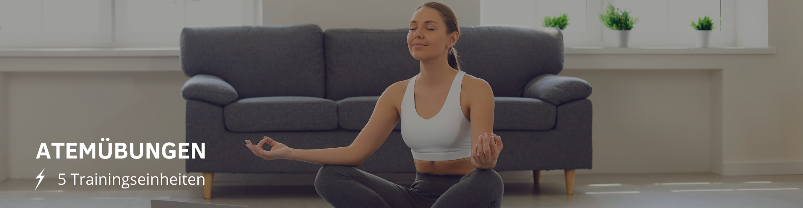

×
Startseite
Verlauf
Kontakt
Einstellungen
Life's Good
☰

Natürliche Bauchatmung
Atemübung gegen Stress
Atemübung zur Beruhigung
Atemübung für weniger Anspannung
Atemübung zum Einschlafen
Natürliche Bauchatmung
Lege eine Hand auf deinen Bauch.
Atme tief durch die Nase ein.
Spüre bewusst, wie sich dein Bauch beim Einatmen ausdehnt und fühle wie sich deine Hand mit der Bauchdecke hebt.
Beim Ausatmen senkt sich die Hand auf der Bauchdecke und der Bauch zieht sich wieder etwas zusammen.
Atemübung gegen Stress
Atme durch die Nase ein und zähle langsam bis vier.
Halte die Luft an und zähle bis sechs.
Atme aus und zähle dabei langsam bis acht.
Atemübung zur Beruhigung
Setze dich hin und lege eine Hand auf den Bauch, die andere auf die Brust.
Atme entspannt ein und zähle dabei bis fünf.
Atme dann fünfmal hintereinander stoßartig durch den Mund wieder aus.
Atemübung für weniger Anspannung
Atme ein und zähle dabei bis zwei.
Halte die Luft an und zähle wieder bis zwei.
Atme weiter ein und zähle dabei bis zwei.
Halte die Luft wieder an und zähle bis zwei.
Wiederhole dies so oft bis zu nicht weiteratmen kannst.
Atme dann in einem ruhigen, langen Atemzug aus.
Atme einige Atemzüge normal ruhig.
Atemübung zum Einschlafen
Liege bequem und entspannt und atme ruhig ein und aus.
Zähle deine Atemzüge bis neun und beginne dann wieder von vorne.
Konzentriere dich dabei auf deine Atmung und das Heben und Senken der Bauchdecke.
Atemübungen von: https://utopia.de/ratgeber/atemuebungen-diese-uebungen-solltest-du-kennen/